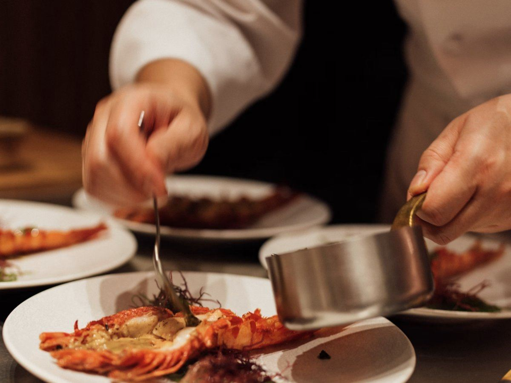
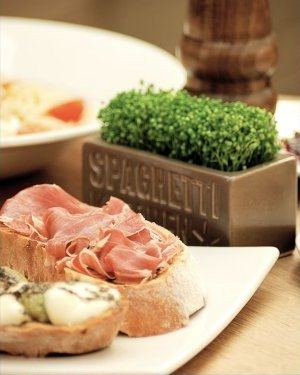
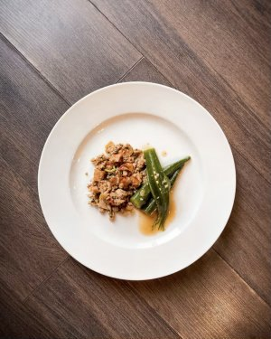
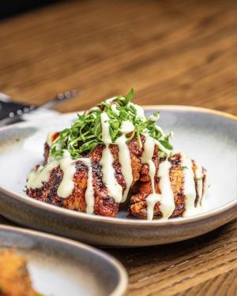
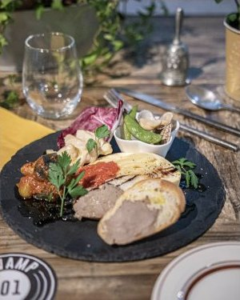
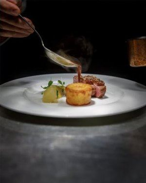
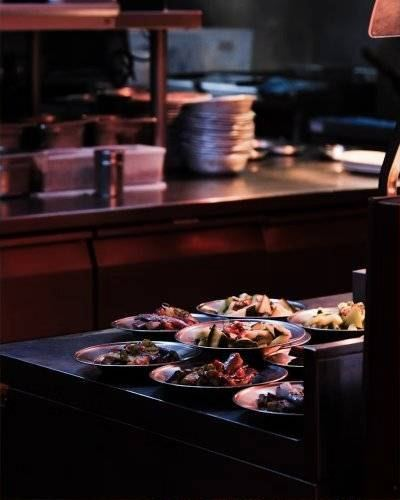
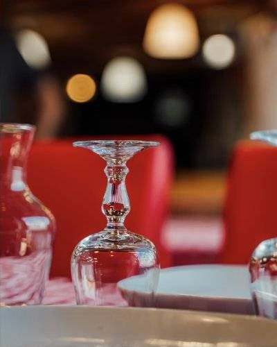
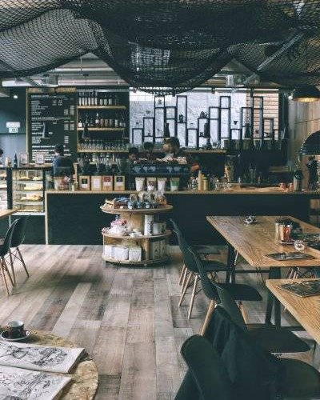
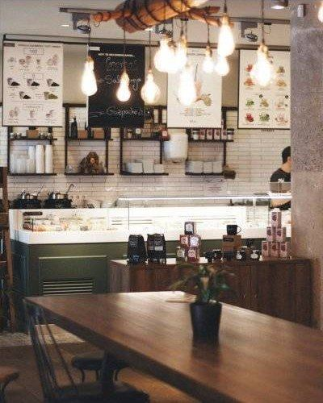

Cocina de brasa
Sabores de fuego lento y mar fresco
Cortes a la brasa, pesca del día y vinos para compartir, en el corazón del Casco Viejo. Reserva en segundos.
Cortes a la brasa, pesca del día y vinos para compartir, en el corazón del Casco Viejo. Reserva en segundos.

Cortes a la brasa, pesca del día y vinos para compartir, en el corazón del Casco Viejo. Reserva en segundos.

Hierbas y mantequilla

Salsa de la casa

Con alcaparras

Hojas verdes y frutos secos

Con salsa de yogur

Para compartir

Con vegetales asados

Reducción de vino





Elige día, hora y cuántos son. Te confirmamos por WhatsApp.
WhatsApp: +507 6000-0000
Instagram: @brasaymar.pty